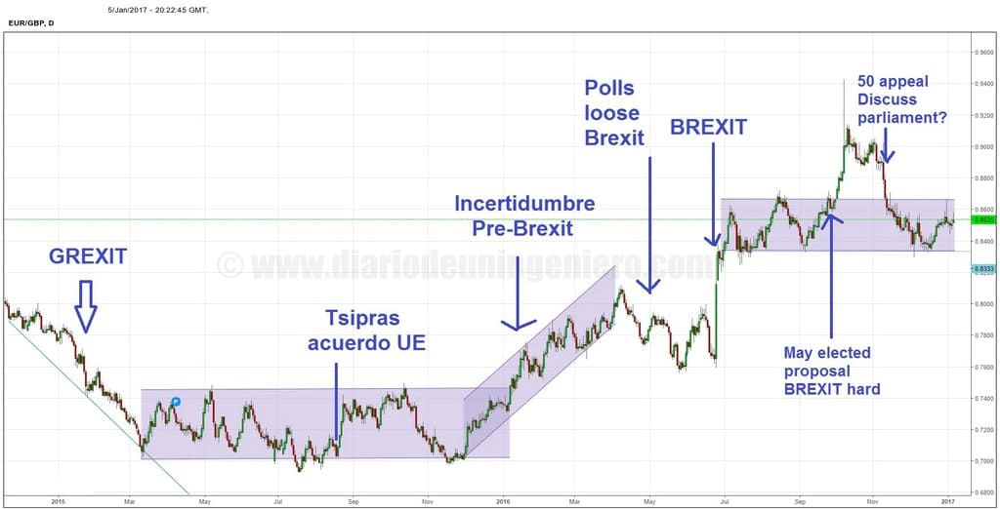

Desde hace 2 años el Brexit lleva asolando el mercado europeo, ya que siempre ha estado encima de la mesa pero los mercados lo han dejado aparcado para este año.
Era la gran cita del año ya que jamás un miembro de la Unión Europea ha salido una vez dentro y porque en Londres se encuentra la mayoría de las operaciones financieras de toda la UE.
El mercado era plenamente favorable a un rechazo a esta separación y desde el primer minuto quedo claro, ya que una separación supondría un recargo adicional al coste de todas las operaciones y del comercio entre la isla y el bloque comunitario.
El hecho es que siempre se descartó que existiera una mayoría de británicos que hicieran posible esto.
En el siguiente gráfico se puede ver la evolución de la moneda única en contraposición a la libra en los dos últimos años:

En él se puede apreciar como la libra gano terreno cuando Grecia parecía que iba a salir de la Unión Europea y el euro estaba en su punto más débil y como tras el rescate a Grecia volvió a su nivel medio de 1:0.75.
A finales de año el culebrón de Grecia se cerró y poco a poco fue perdiendo terreno, ya que se acercaba la gran cita electoral.
Dos meses del Brexit las casas de apuestas pronosticaban un no a la salida del Reino Unido lo que hizo que amagara con descender al nivel estable de los 1:0.76.
La noche del escrutinio del Brexit fue una noche infernal para la mayoría de los brókeres de medio mundo ya que el mercado descontaba un rechazo al Brexit que había llevado a la libra a máximos históricos frente al euro.
Esto desencadeno una bajada de la libra sin precedentes que comenzó en el mercado nocturno y de futuros donde los grandes vencedores fueron las mineras de oro y la divisa del dólar.
El euro también se devaluó mucho pero fue más bien puntual del día ya que la libra en sesiones posteriores se llegó a dejar cerca del 20% de su valor pasando de 1:1.47 en su cambio frente al euro a 1:1.20.
Tras el Brexit la libra caería casi un 15% frente al euro (un 10% de contracción a sus niveles menos favorables de las encuestas más otro 5% de caída) y un 13% frente al dólar como se aprecia en el siguiente gráfico.

Los índices europeos registraron bajadas notables, donde sin duda uno de los que más afectados sería el IBEX35 ya que España es uno de los países con más exportaciones con Reino Unido.
El índice alemán y el británico descenderían un 10% para luego recuperar el DAX la mitad de la caída y el FTSE100 acabar en positivo en posteriores sesiones.
Sin embargo debido a la bajada de la divisa la capitalización del británico descendería más que cualquier índice.
El IBEX llego a descender un 15% y tardaría meses en recuperarse del susto.

Las compañías más perjudicadas fueron sin lugar a duda los bancos, y las aerolíneas, ya que en el caso real de divorcio entre la UE y UK serían las que realmente se verían afectadas.
En España en concreto serían IAG, que es la fusión entre British Airwais y Iberia y el banco Santander en la que tiene casi la misma presencia que en España, así como Telefónica, con O2 allí.
También las tecnológicas ya que tras el paso del tiempo las correcciones han permanecido en estos valores mientras que el resto ha retomado sus valores anteriores o los ha incrementado.
El descalabro de la divisa vendría cuando se desenmascaron las verdaderas intenciones del nuevo gobierno tras la renuncia de Cameron y la postura más dura frente al Brexit.
En los últimos meses se ha rebajado el tono y se espera una resolución judicial para saber el calado que tendrán las reformas tras el Brexit y el vínculo que llegara a existir con la UE,
estableciéndose un nivel estable entorno los 1:0.85.
El verdadero cambio de actitud de los ingleses se fraguo con una intensa campaña por asociaciones como el UKIP y otros partidos políticos que hicieron eslóganes fáciles que entraran a toda la población.
Tales como que el incremento de la inseguridad o de los crímenes pueden ser atribuibles a los ciudadanos europeos cuando la mayor parte son de británicos o británicos provenientes de otros países que ya tienen esta nacionalidad.

Es muy curioso que los británicos achaquen sus problemas a los europeos cuando han estado beneficiándose del comercio con la UE desde su nacimiento.
Pudiéndose afirmar que el 75% de la riqueza de todo el país viene de Londres, y que la capital hace que el bienestar social que tienen todos los pueblos y pequeñas ciudades pueda llevar a cabo.
El Reino Unido en la última década ha experimentado un crecimiento exponencial en cuanto a empresas dedicadas a la tecnología y la investigación y el desarrollo.
Esto ha sido posible gracias a la multitud de profesionales venidos de fuera, ya sea de la UE o del sudeste asiático, países que estuvieron sometidos al imperio Británico hace un siglo y con los que hubo un comercio y un flujo de personas constante.
El número de gentes con orígenes de la India, Pakistán y Bangladesh supera el 5% de la población y va en aumento.
Reino Unido cuenta con cerca de un 15% de inmigrantes, pero lo que no se cuenta es que los residentes con origen de fuera es mucho mayor en torno al 30% de la población total.
De los países de la UE el país que más destaca es Polonia con cerca de 1 millón y medio de personas que emigraron en las últimas dos décadas.
Los polacos por ser un país con unas condiciones climatológicas similares y por el uso del inglés en la escuela han hecho que existiese una voluntad permanente de encontrar en UK el lugar deseado de vivir.
Sin embargo, la mayoría de países de la UE que actualmente se encuentra en el mercado de trabajo están ahí por la crisis que ha ido galopando por el sur de Europa, tales como España, Italia o Grecia.
La mayoría de los ciudadanos están de paso y no albergan esa similitud que pueda darse con el pueblo polaco o algunos pueblos del este de Europa.
Estos países también dan más de lo que reciben y casi la mayor parte están trabajando en sectores que el británico no trabaja o donde faltan profesionales>, como pueden ser la tecnología o la medicina.
Por esta sencilla razón, en el caso de que el Brexit se lleve a cabo, se les puede tornar todo en contra.
Si bien no se va a expulsar a los trabajadores que hay en activo puede no cubrirse la demanda y a la hora de elegir el ciudadano europeo ya puede ver no tan con buenos ojos ir a allí.
Además debido a la caída de la libra los salarios ya no son competitivos para la mayoría y con el coste de la vida actual imperante puede ser contraproducente trabajar allí.
Y es que tras el Brexit, el aumento de los precios llegará debido a la debilidad de la moneda.
Para contrarrestar el aumento de la inflación el banco de Inglaterra más pronto o más tarde se verá obligado a reducir los tipos de interés y a imprimir más dinero para que los salarios suban y se llegue a una estabilidad.
Los centros comerciales cambiarán algunos productos de la UE por otros de Nueva Zelanda u otros sitios de la Common Wealth, ya que podrá ser más rentable.
Aun así estimo que la mayoría serán como hasta ahora pero a un precio superior y en el que UK tendrá que esforzarse en posibles pactos bilaterales con los socios del sur, sobre todo en productos de la agricultura.
El éxodo de empresas de Londres y la City llevará a cabo un cambio en el que aumentara el número de empresas del resto del mundo como China y La India y disminuirá el del bloque comunitario.
Por ello, seguirá habiendo inmigración pero más de fuera de Europa que de dentro, y a eso tendrán que acostumbrarse los británicos.
Otro tema que si se lleva a cabo el citado Brexit es la independencia de sus estados asociados como Escocia y quizás Irlanda del Norte.
Tendrán que hacer frente a esa situación ya que estos países si estaban adheridos al Reino Unido era por las ventajas fiscales y comerciales con el resto de países de Europa ya que la independencia les iba a costar estar dentro de la UE.
Esto podría generar bastante malestar en los británicos más patrióticos que ven el fin de los restos de lo que una vez fue el mayor imperio comercial del mundo.
En lo que va de año la economía británica se ha ralentizado si bien menos de lo que se esperaba, pero es cierto que el Brexit todavía ni se ha ejecutado ni se ha activado, luego es pura especulación de
mercado. Cuando los cambios lleguen creo que todos estos catalizadores como son los precios puede que llegue replantearse el voto a más de uno.
El índice británico que agrupa las cotizaciones de las mayores empresas de UK, el FTSE100, se ha incrementado cerca de un 8% pese al Brexit y es el índice que más ha subido.
Esto se debe al beneficio que ha presentado tener unos precios más competitivos de cara al exterior por una libra más barata.
Pero si se compara este índice para una capitalización en dólares el resultado es francamente negativo, depreciándose en torno a un 2%.
Actualmente el Brexit se enfrenta a la disyuntiva de conocer si va a ser suave o duro.
La mayoría del partido de los "tories", la derecha inglesa son partidarios de suavizar el discurso para conseguir un pacto y poder entrar al mercado único de la UE.
El gobierno y sus representantes son partidarios de un Brexit duro que deje el control de todos los órganos del estado y la capacidad de tomar medidas especiales en diferentes temas.
Tales como el libre paso de personas de la unión y las manos libres para decidir qué hacer con el dinero que iba a la UE como fondos de cohesión, encabezados por la presidenta actual, Theresa May.
El día del Brexit se envió una apelación al tribunal constitucional del Reino Unido contra la decisión unilateral de cortar los lazos con la unión por las irregularidades cometidas durante la campaña electoral del referéndum.
En ella el partido que apoyaba el Brexit, el UKIP, lanzo falsas advertencias contra lo que podía pasar si seguían ahí y las ventajas de estar fuera sobre todo en la seguridad social inglesa que calculaban que
podrían ganar al año una cantidad enorme, cosa que es falsa totalmente ya que el coste para el Reino Unido de salirse fuera será de una fuerza difícil de calcular que pondrá en apuros a muchos de los británicos durante posiblemente una década.
Dependiendo de si trabajan duro para conseguir la estabilidad global en todos los términos podrán conseguir un sistema estable al margen de la unión.
Esos años perdidos seguramente tengan un coste geopolítico que les haga caer varias posiciones con respecto a otros países de la unión.
Esta apelación ha sido finalmente ganada por los ciudadanos que la enviaron, y en Noviembre el gobierno recurrió al supremo que ha estado deliberando en el mes de Diciembre y cuyo resultado se conocerá en Enero,
De eso depende del tipo de Brexit que se realice por tanto habrá que esperar.
Si la apelación tiene éxito el Brexit deberá ser votado y tener el respaldo del parlamento británico y las posibilidades de realizarse las medidas más polémicas serán bastante bajas.
Esto fortalecerá la libra de nuevo y muchas de las compañías castigadas por el Brexit como bancos y aerolíneas podrán recuperar su valor bursátil .
© 2016 - All Rights Reserved - Diseñada por Sergio López Martínez
El sitio se mantiene gracias a la publicidad, por favor Desactiva Adblock para seguir navegando
He desactivado Adblock![[Valid RSS]](https://www.onepointsync.com/wp-content/uploads/2016/08/valid-rss-rogers.png "Validate my RSS feed")